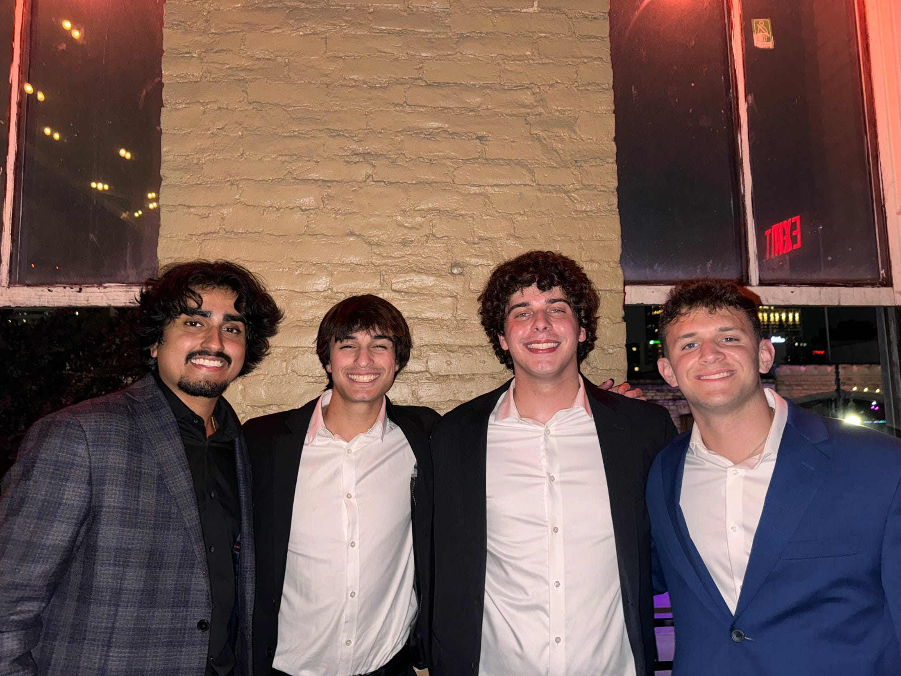
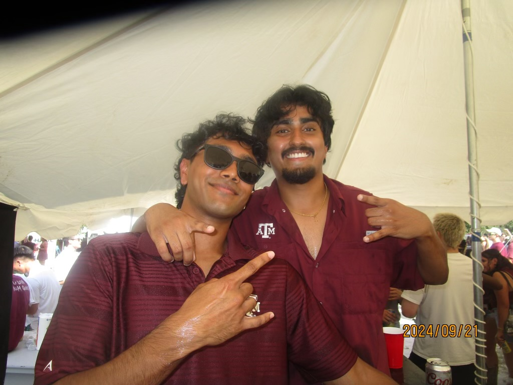
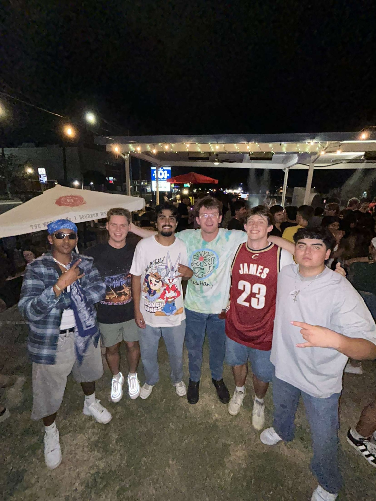
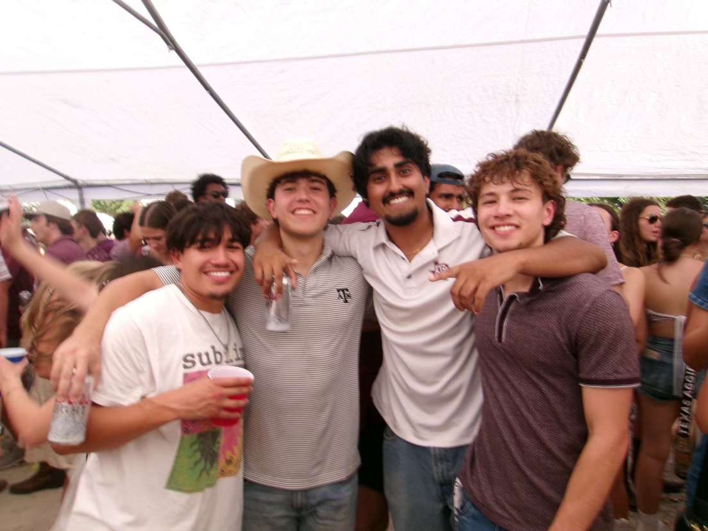

About Me
My name is Radley Lukose, and I am a passionate student at Texas A&M, Class of '26. I am currently pursuing a degree in Statistics, with a minor in Technical Sales. Beyond my academic interests, I have a deep love for sports, particularly supporting all Dallas teams. In my free time, I enjoy spending time with friends, playing basketball, and staying connected with my family. Faith is also an important part of my life, and I find strength and guidance through Jesus.
Facts About Me
- I love all Dallas sports.
- My first sports game was a Mavs game when I was 12 years old, and since then I have been all about Dallas.
- I have an older brother who is working to be a Physical Therapist.
- I enjoy spending time with friends and playing basketball to kill time.
- I love Jesus!
Pictures




